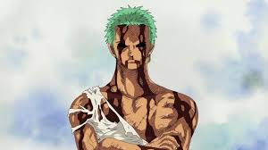
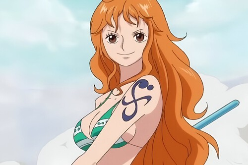
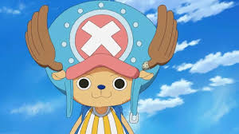
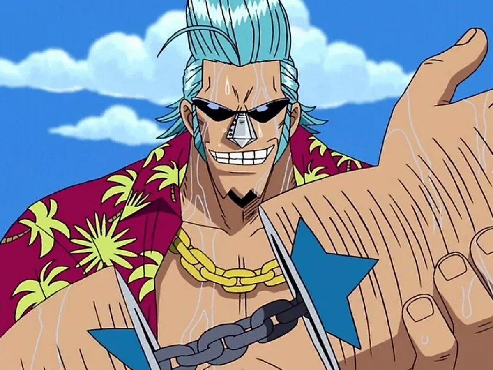
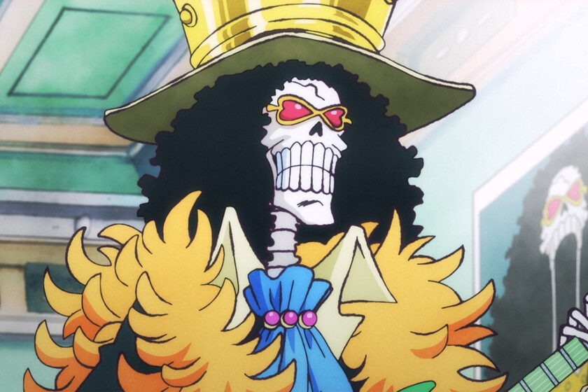
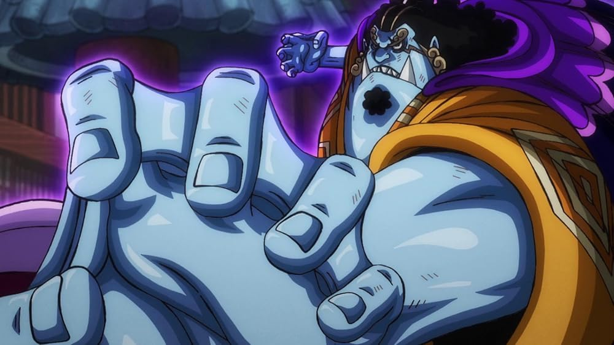

Lo que comenzó como un joven en un barril, se convirtió en la tripulación más peligrosa para el orden establecido del Gobierno Mundial.

Capitán. Poseedor de la voluntad de los "D". Su sueño de libertad lo lleva a desafiar a dioses y reyes. Tras los eventos de Wano, su verdadera naturaleza como la encarnación de la alegría ha despertado.

Espadachín. El Rey del Infierno. Su dominio del estilo Santoryu y su Haki de armadura lo sitúan como uno de los combatientes más temidos del océano.

Cocinero. El "Pierna Negra". No solo es el soporte vital de la banda, sino un guerrero cuya pasión arde literalmente en sus ataques de fuego.

Navegante. La "Gata Ladrona". Su capacidad para predecir el clima en el Grand Line es casi sobrenatural, siendo el cerebro estratégico que guía el barco.

Arqueóloga. La "Niña Demonio". Es la única pieza clave en el mundo para descifrar los Poneglyphs y revelar la verdad del Siglo Vacío.

Médico. Un reno con un corazón humano. Su dominio de las transformaciones lo convierte en un aliado versátil y vital para la supervivencia.

Francotirador. "God" Usopp. Representa la valentía del hombre común que enfrenta sus miedos para convertirse en un guerrero valiente del mar.

Carpintero. Un cyborg "Súper" que construyó el Thousand Sunny. Su ingeniería es la que mantiene a la banda navegando hacia el fin del mundo.

Músico. El "Rey del Soul". Un esqueleto que regresó de la muerte para cumplir su promesa con Laboon, trayendo música y alegría a la oscuridad del mar.

Timonel. El "Caballero del Mar". Su incorporación cierra la brecha entre humanos y hombres-pez, aportando una fuerza y sabiduría veterana.
Declaración de IA: Los textos fueron expandidos para reflejar el estado actual del manga y profundizar en la importancia narrativa de cada nakama.